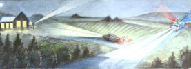
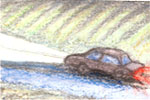

When Seconds Count: Getting Emergency Help To Your Rural Home
By Mona Vanek
December/January 1998
COUNTRY SKILLS
by Mona Vanek
We country folks know an emergency always happens at the worst time, generally disrupting our plans. But we're capable, independent, and self-reliant. It's our lifestyle: we deal with it. The calf gets scours, we cure it. The pump quits, we fix it. The tractor loses a wheel, we replace it. We know what to do.
We don't call for outside help unless it's unavoidable. Maybe that's why, when we need emergency medical help, we're woefully unprepared to get it. I know how disastrous that can be.
A sound woke me shortly after I'd fallen asleep on Good Friday eve, 1987. Beside me, my husband moaned, "Oh, my jaw's hurting."
I turned on the light and looked at him. "Are you all right?"
"Something's hurting my chest," he said, "and my arm..."
Labored breathing choked off his words. His face was ashen; sweat beaded it. Suddenly, my heartbeat thundered into my ears as I thought, "Heart attack!"
Grabbing the bedside phone, I called a nurse who'd attended a home-extension club meeting that I'd hosted at my house earlier that week. Joyce was her name. I remembered her saying that she rode with the local ambulance.
"Art's having a heart attack, can you call the ambulance?" I asked. For the life of me, I could not think of anything else to do. Oh, I was so ignorant! So naive! So trusting that a phone call would swiftly whisk an ambulance to the door! As I learned within the next half hour, when you live 50 miles from the nearest hospital and the ambulance crew is volunteer, that's not what happens.
Because I'd reacted quickly, in less than five minutes Joyce had vital oxygen flowing into Art and the ambulance was on its way.
"Get your car headlights shining at the driveway," she commanded. I did as she instructed, then sat in the dark, waiting in helpless terror for the ambulance that seemed never to come. When it did arrive, people seemed to appear from everywhere. What they did looked totally chaotic, but in minutes the ambulance disappeared with Art aboard, racing headlong into the night, sirens wailing, lights flashing.
Following that event, the realization of how being unprepared can spell disaster nudged me; I enrolled in classes and became an emergency medical technician (EMT). I've served on our local ambulance for ten years and learned things that all rural residents should know to be prepared for a medical emergency.
Before Emergency Strikes
Know the telephone number to summon emergency services. Although in most cities 9-1-1 may be the number to call, not all rural counties are in the 9-1-1 program. Check your local phone directory to find out, or ask your local ambulance crew.
When it's not city blocks but miles to your house, and long distances to an emergency facility, wasted time can quickly add up to a fatal delay.
Post concise directions to your location next to every telephone. When emergency help is needed, these directions can be read to the dispatcher. Fear and panic can cause you to forget what you know. Be sure to include:
1. Your name. (This will be particularly important if you're found unconscious.)
2. Correct, complete name of the road you live on.
3. Name of your town. (Nearby towns often have roads with the same names as those in your town.)
4. Precise directions to your house. If your lane branches off of a highway or county road, be sure to begin with a central, known starting point, such as a highway mile marker. Say to go "X" miles (or tenths of a mile). If it branches again, as from a lane leading to other homes, add "Y" miles left or right. Keep in mind that it's best to use left and right directionals, rather than east, west, north, or south.
Steps to Getting Help Fast
Don't delay! When there's an emergency, immediately pick up the phone and call for emergency services.
Next, call a close friend or neighbor and ask them to come and be a "flagger" at the entrance of your driveway to help the ambulance locate you. Whether or not your address is correct and known, always call a flagger if you can. This is no time to worry about waking a neighbor or to fear embarrassment. This person may also be able to help with other needs, like caring for children, livestock, or pets, or bringing other family members to the hospital, if necessary.
If your flagger will be arriving in a vehicle, tell him to park with his headlights on dim, have his hazard lights (all flashers) on, and be sure not to block your driveway. (See "Instruction Card for Flaggers," page 70.)
Know (and Tell) Where You Live
It may take some effort to learn (or get) your correct physical address, but do it! Ask your postmaster or telephone company, or your county's zoning and planning, assessor's, or commissioner's offices, if your property has ever been given a rural address.
Subdivisions with loops can be particularly confusing to those who don't live there. If the houses all share an address assigned to the main access road, delays will occur.
The ambulance I work with was dispatched into a subdivision just before dark, during a heavy downpour. A man had called 9-1-1, shouting, "My wife was pushing the garage door up and fell through the window! Both her arms are cut! We're at 3256 Highway 2," and he hung up. As the ambulance raced toward the scene, one of the crew radioed 9-1-1, asking, "Which house is she in? That's a subdivision."
Although the caller's phone number was recorded, no one answered the phone when dispatch tried to reconnect. Because of the delay of searching house-to-house in the sprawling park-like forest complex, the woman lost so much blood she had to have transfusions.
Give complete directions. If roads within the subdivision have names, even if they're unsigned, give them. Someone responding might be familiar with the area. Identify the house by distinguishing features, including an unusual tree or yard ornament. Put it in relation to other houses sharing the same highway or road address. Say, "It's second from the red house," or whatever.
An Instruction Card for Flaggers
Jot down the following information on an index card and exchange with potential flaggers you might call in case of an emergency.
Quickly go to the entrance of the victim's driveway.
Don't stand in the road.
Do stand on the shoulder of the road, facing the ambulance's approach.
Wear light or night-visible clothing.
Wave alighted flashlight.
Don't block the roadway with your vehicle.
Do park your vehicle just beyond the driveway, facing the direction that the ambulance will be facing, so your rear hazard lights (all flashers) are what the ambulance driver sees.
Or park alongside the driveway, with your headlights aimed toward the house entrance. Don't let your lights blind the ambulance driver.
Do stay at the driveway entrance until one of the ambulance crew relieves you or summons you to give assistance.
Don't leave until the ambulance has left - your help with family concerns may be needed.
Postal Addressing Can Mean Delays
Postal rural addressing can have a drastic impact on how quickly (or slowly) the ambulance arrives. Rows of mailboxes are common throughout rural counties. They sit on planks, somewhere "close" to driveways wending off into the woods or over hills.
All too often, near this cluster of mailboxes there is only one driveway and one house in sight at the end of it. And so when 9-1-1 dispatchers are given addresses established by rural route mailbox numbers, ambulance crews are frequently left searching for the victim.
If your rural mailbox is at your driveway entrance, place five-inch or larger nighttime-visible numbers on it (or hang them over or under it). Keep greenery trimmed away. If the mailbox isn't at your driveway - even if it's just across the roadway and other houses are visible - put matching numbers at your driveway entrance and, in the event of an emergency, tell the dispatcher where the ambulance driver needs to look for it.
Unnamed, Unnumbered Nightmares
At a dream house he was building on a recently subdivided homestead bordered by evergreen forests, the carpenter fell from the rafters. The landowners were there and called 9-1-1. Not realizing their responsibility to get a rural address for their property, they'd failed to ask the county assessor to assign one. Panicky, they forgot the highway number and county road name, too. "We're the only house on Gray Wolf Lane," they told the dispatcher. That's what they were calling the new private drive they'd recently had bulldozed to their clearing. When dispatch repeated it to the ambulance, the driver replied, "Where the hell is that?!" The chancy search began. The delay was hellish for everyone involved.
Calls to unnamed roads or unnumbered homes can be nightmares for emergency crews and victims. And yet they're all too common in rural areas where addressing is mandated loosely, if at all. According to the federal Advanced Rural Transportation Systems (ARTS), approximately 85% of the road mileage in the United States lies in rural and small urban areas (population less than 50,000). Rural counties don't always have zoning laws requiring that addresses be assigned to new homes on previously unoccupied land. Still fewer rural counties have reporting methods to inform ambulances that a new lane or address number has been created in their district. It's the rare rural ambulance service that has a regularly updated directory.
If you live on an unnamed lane, find out if you can put up your own road sign. Before choosing a name, check with the county zoning and planning office to find out, which ones are already taken. Don't choose a sound-alike name. Pine Lane, Pine Cove, Pine Street, and Pine Drive are easily confused when emergency strikes.
Despite our lack of preparedness, Art lived - with only one third of his heart critically damaged - to become an American Heart Association statistic: one of just 12% who survive a severe myocardial infarction heart attack. We hope the steps outlined here will help other folks beat the odds as well.
JOIN OR, LAUNCH A RURAL ADDRESSING PROJECT
One of the most personally rewarding aspects of rural living is having opportunities to volunteer for worthwhile projects. If your area lacks comprehensive addressing, let your county officials know that you think addressing is important and you'd like to see an addressing project begun.
If an addressing project is already underway, find out who is in charge and ask whether or not there is an addressing committee. Offer to become involved.
"Fortunately, most county commissioners have realized the importance of addressing, and projects are under way in most Montana counties," says Surry Latham of the Montana 9-1-1 Program. "The Montana Department of Administration's Geographic Information Systems Program and the 9-1-1 Program have produced a handbook titled, Montana Addressing Guidebook for Local Governments. Copies are available to anyone upon request."
Requests may be sent to Latham at the Department of Administration, P .O. Box 200113, Helena, MT 59620-0113. Interested folks can also e-mail Latham at slatham@state.mt.us or call her at (406) 444-2420. Be sure to provide a return address and indicate the number of copies you would like to receive.
For more information on rural addressing in your area, call your state's 9-1-1 office and ask if it has a rural addressing guide. If your help is needed to launch an addressing project, don't go it alone: enlist the aid of service organizations - 4-H, Eagle Scouts, rod and gun clubs, PTOs, etc. Be innovative. Organize fund-raisers. Coordinate efforts to make sure that everyone gets address stickers by their phones and that every road has a designation sign.
|
 Amy Young |
|
 |